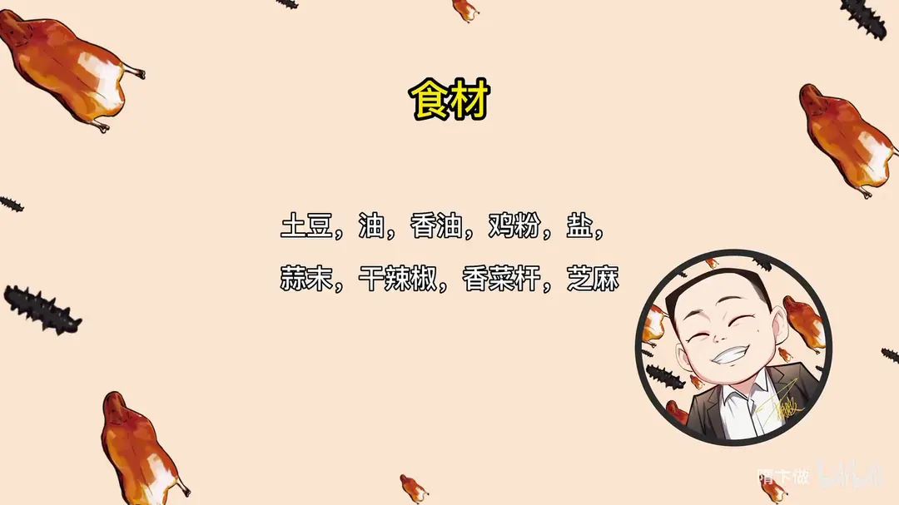
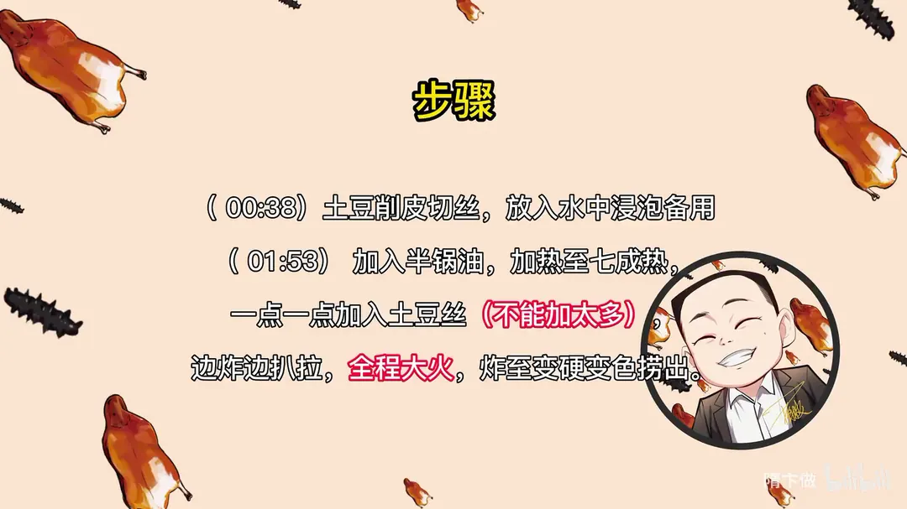
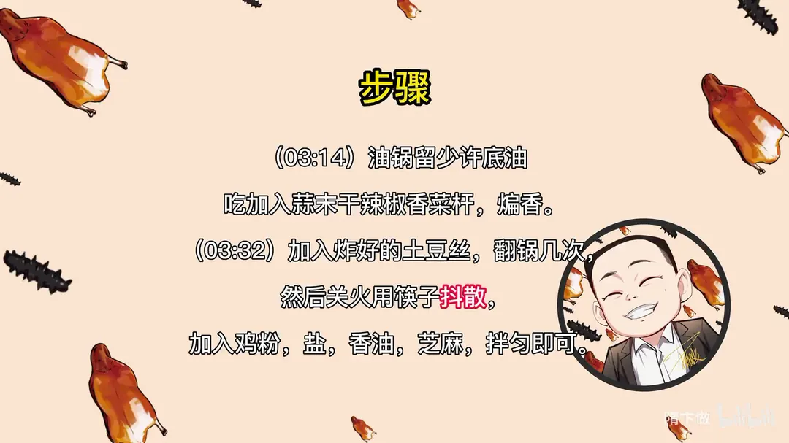

香辣土豆丝
隋卞一做。土豆削皮切丝泡水，半锅油烧到七成热分批下锅，全程大火炸至变硬变色捞出，再用底油炸香蒜末干辣椒香菜杆，关火抖散拌匀。
原视频：https://www.bilibili.com/video/BV1Lz4y1s7QN
食材
土豆、油、香油 等 9 样
| 类别 | 用料 | 用量 |
|---|---|---|
| 主料 | 土豆 | 适量 |
| 炸制 | 油 | 适量 |
| 小料 | 蒜末 | 适量 |
| 小料 | 干辣椒 | 适量 |
| 小料 | 香菜杆 | 适量 |
| 调味 | 鸡粉 | 适量 |
| 调味 | 盐 | 适量 |
| 调味 | 香油 | 适量 |
| 点缀 | 芝麻 | 适量 |
步骤
- 切丝泡水：土豆削皮切丝，放入水中浸泡备用。
- 热油：加入半锅油，加热至七成热。
- 炸土豆丝：一点一点加入土豆丝，不能加太多；边炸边扒拉，全程大火，炸至变硬变色捞出。
- 炒香料：油锅留少许底油，加入蒜末、干辣椒、香菜杆，煸香。
- 拌匀：加入炸好的土豆丝，翻锅几次，然后关火用筷子抖散，加入鸡粉、盐、香油、芝麻，拌匀即可。
讲解要点
难度：★☆☆☆☆（原料少、步骤少，只要刀工切匀，唯一要小心的是油炸安全）
为什么这么做
- 土豆丝比火柴棍略细：丝越细，下锅后越快炸透、越酥；粗细不匀就会出现细的炸焦、粗的还软。
- 切之前把土豆削出一个平面：有一面是平的，切的时候就不会打滚，切出来的丝才整齐。
- 土豆长芽不能吃：挑原料这一步不能省。
- 油面不超过锅的一半：土豆丝水分多，下多了会溢出来，一定要注意安全。
- 油温七成热：家里火软，可以拿一两根丝试一下，下去很快就浮上来，就可以了。
- 一点一点分批下锅、边炸边扒拉：一次下太多降温、粘成团；扒拉是让丝尽量往中间靠，锅边受热太快，靠边的容易变色发苦。
- 炸到变硬变色捞出，等油温升起来再炸第二锅，全程大火不关小火。
- 底油把蒜末煸到变黄：蒜香味和干辣椒、香菜杆的香味全跑到油里，再和土豆丝拌才算有味。
- 关火后用筷子抖散再加调料：土豆丝已经炸脆，一直开火翻炒会越炒越软、越炒越碎，关火拌才保住酥脆。
容易翻车
- 油面别超过锅的一半，下土豆丝时慢慢放，防止溢锅。
- 土豆丝一次别下太多，容易粘团、外面焦里面生。
- 靠锅边的一圈受热太快，要及时扒拉回中间。
- 蒜末要煸到变黄才出香，生的蒜味寡淡，但不要炒糊。
- 土豆丝下锅翻几下就立刻关火，再加鸡粉、盐、香油、芝麻抖散拌匀。
热评补充
- 东北有这道菜的变种「三丝爆豆」，加了洋葱丝和花生米，量很大，很带劲。
原片尾卡



原片文案
AI 字幕校准稿
上次蜀风情之后，我的私信就爆炸了。我们也没想到这个视频热度这么高，直接给蜀风情干到北京家常菜第一了。里边你们最感兴趣的就是今天要做的这个。
先切土豆丝。土豆削皮，土豆长芽就不能吃了。咱每次教做饭视频教得好细啊，从煮鸡蛋到挑土豆，那怎么办呢，希望大家学得更细，学得更细、做得也好，挑选原料和刀功这是必不可少的。买的土豆有点大，比拳头要大一些，先去掉一块，切这块不要扔，切个轮、切个花，切的时候它就不打滚了。
其实这点活儿在家里面就得用擦丝器，擦子小还方便，那咱们啥时不是没有嘛。不过我切的应该跟那个差不多，比火柴棍稍微细一点。看来刀工好也有好处，在厨房省不少钱呢。然后咱们台前的工作基本就做完了，真的很简单，没有骗你们。
上火，油面不能超过锅的一半，防止它水分太多，全部都溢出来，一定要注意安全。炸土豆丝的油温基本上在七成热左右，家里边火比较软，你们可以拿一两根试一下，下去之后很快就上来，这就可以了。
不要太多啊，慢慢地下，边炸边扒拉扒拉，让它尽可能往中间靠一靠。靠边的地方容易热，受热太快了，变色变得比较严重。这样可以出了，变硬变色，等油温升高以后，我们再炸第二锅。全程大火，不关小火。好了，看着颜色上来了，可以了。
油给它倒出去之后，我就继续用就行了，挺干净的，土豆也没有什么异味。锅底留点底油，放入蒜末给它煸黄，变黄之后才能出那种香味、蒜香味。下干辣椒、香菜杆，通过煸炒蒜、辣椒、香菜，这些香味就全都跑到油里面去。然后把炸好的土豆丝放进去，这会儿注意了，这叫关火，然后用筷子慢慢地给它抖散，放鸡粉、盐，来点香油、芝麻，好了，出锅了。
哇，咔咔的酥脆，好脆啊。又有土豆本身的香气，还有辣椒的辣，而且这个做法很简单，所有原料调料大家都有，简单方便。唯一要注意的地方就是在油炸的时候注意安全。